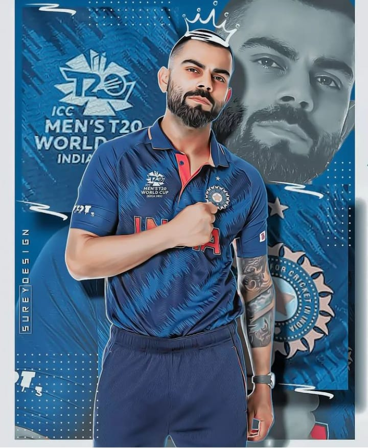

THE RUN MACHINE
Virat Kohli (born 5 November 1988) is an Indian international cricketer and former captain of the India national cricket team. He plays for Delhi in domestic cricket and RCB in the IPL as a right-handed batsman. He is often considered one of the best batsmen of his era and some critics believe him to be one of the best limited-overs batsmen in history. Between 2013 and 2022, he captained the India cricket team in 213 matches across all three formats. With 40 wins out of 68 matches, though mostly winning at home, Kohli is one of the most successful Indian Test captains.
